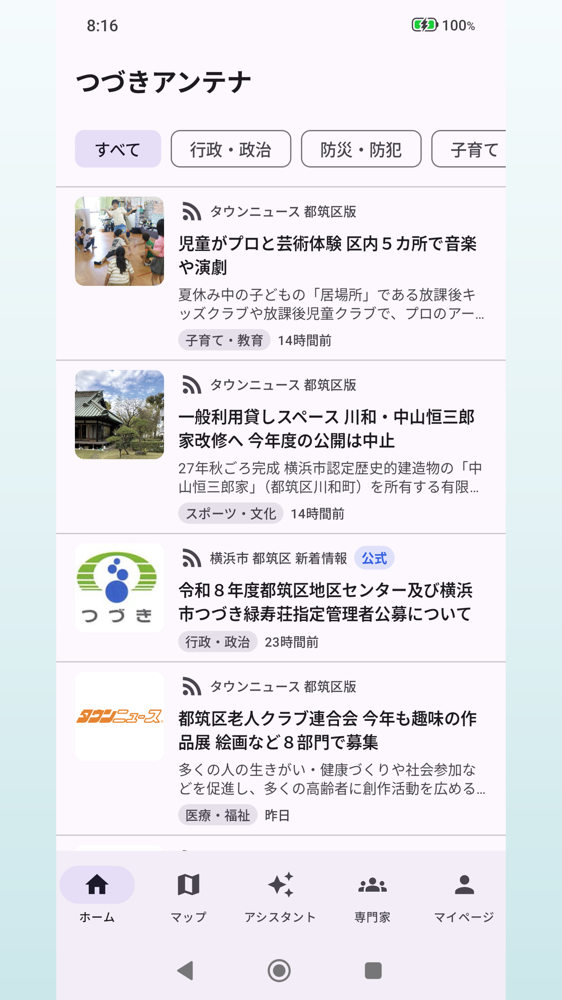
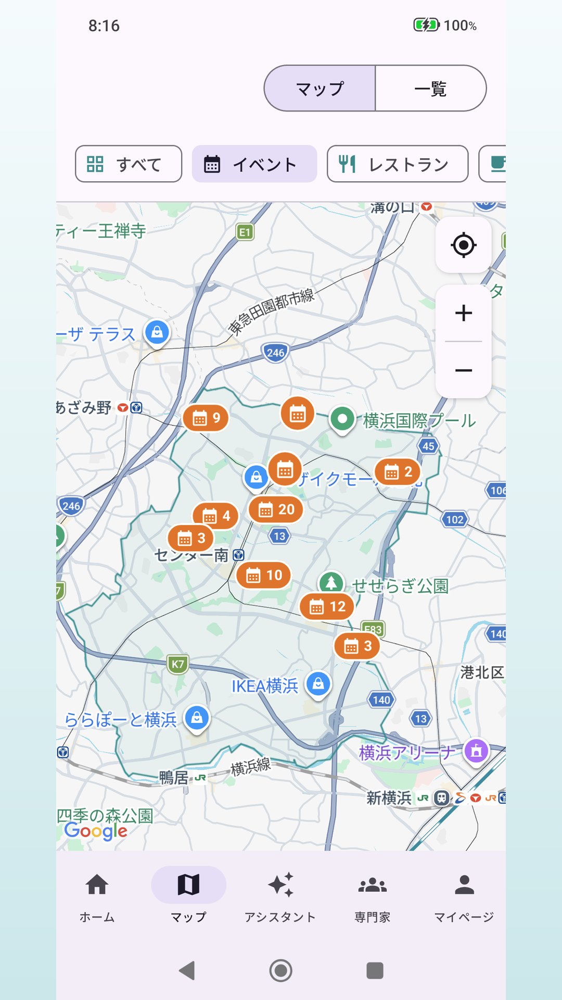
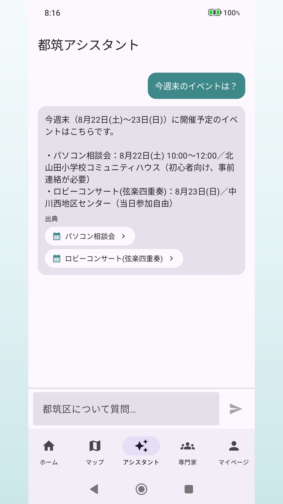
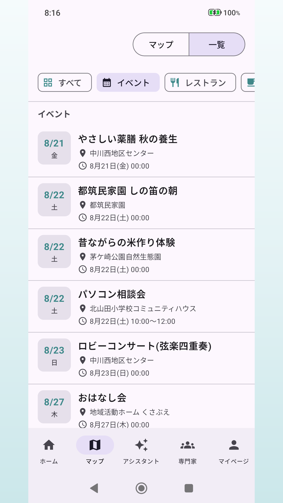
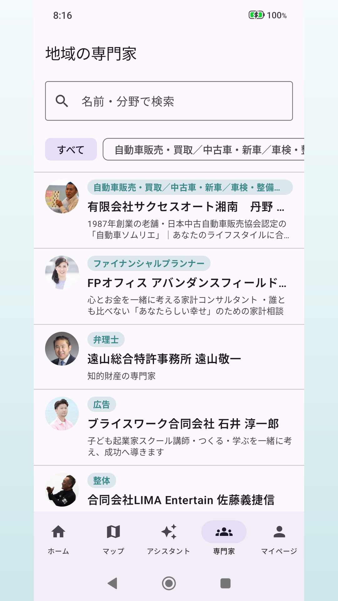

つづきアンテナについて
つづきアンテナは、横浜市都筑区の地域情報を1か所に集めて届けるアプリです。行政のお知らせ、地域ニュース、イベント情報を、都筑区に関するものだけ集めて時系列で表示します。運営は株式会社NEXASPARK です。
都筑区の「いま」がひと目でわかる統合フィード
複数の情報源から都筑区に関する記事を集めて、新着順に表示します。AIが「子育て」「防災」「くらし」などの生活カテゴリに自動で振り分けるので、知りたい話題だけを追えます。
地域マップ
区内のイベントやお店を地図から探せます。マップ表示と一覧表示を切り替えられます。
AIアシスタント
「今週末のイベントは？」のような質問に、アプリが持つ地域データを根拠にして答えます。回答には出典が付き、そのまま詳細ページへ移動できます。
暮らしの専門家・クーポン・求人・地域コミュニティ
地域の専門家に相談したいとき、近所のお得な情報を探したいときに使えます。
ログインは不要
閲覧・通知・ブックマークはアカウントなしで使えます。ログインが必要なのはクーポンの利用など一部の機能だけです。
画面イメージ





掲載している情報の提供元
つづきアンテナのフィードは、以下の情報源から都筑区に関する記事を集めて掲載しています。各記事には提供元の名称を必ず表示し、見出しと要約のみを掲載しています。記事の全文は提供元のサイトでお読みいただけます。
- 横浜市 都筑区 新着情報 横浜市都筑区（公式）
- 横浜市 都筑区 記者発表 横浜市都筑区（公式）
- 横浜市 都筑区 防災・防犯 横浜市都筑区（公式）
- 横浜市 都筑区 子育て・教育 横浜市都筑区（公式）
- タウンニュース 都筑区版 株式会社タウンニュース社
- むつづき（都筑区イベント） MUTSUKI（掲載許諾取得済み）
掲載内容についてのご指摘・掲載停止のご依頼は、下記のお問い合わせ窓口までご連絡ください。
更新情報
- 本サイトを公開しました。
Android 版は現在、公開に向けて準備中です。配信を開始しましたら、この欄でお知らせします。以降もアプリの新しいバージョンを公開するたびに更新します。
お問い合わせ
つづきアンテナに関するご質問・ご意見、掲載内容についてのご連絡は、以下の窓口で承ります。
- 運営
- 株式会社NEXASPARK つづきアンテナ運営担当
- メール
- yuta.kimura@nexaspark.org
- 受付
- 平日 10:00–18:00（土日祝を除く／返信までに数営業日いただく場合があります）
規約・ポリシー
プライバシーポリシー →本アプリにおける利用者情報の取扱い 利用規約 →
本アプリの利用条件